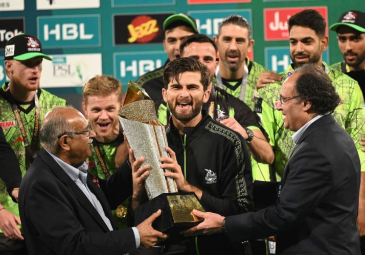
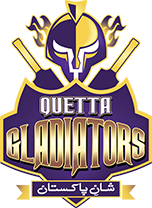
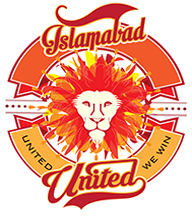
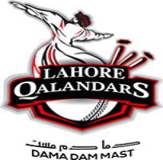
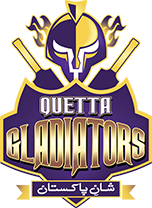
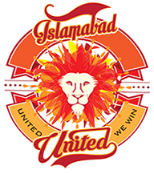
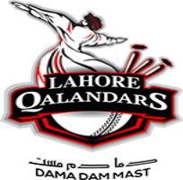

La Pakistan Super League (PSL) es la principal liga de cricket de Pakistán, jugada en formato Twenty20 (T20). Inaugurada en 2016, la PSL cuenta con equipos franquiciados representando ciudades importantes de Pakistán, como Karachi, Lahore, Islamabad y Peshawar, entre otras.
La temporada de la PSL se lleva a cabo anualmente durante el invierno pakistaní, generalmente entre febrero y marzo. La liga ha sido una plataforma crucial para revivir el cricket internacional en Pakistán, atrayendo a jugadores de renombre mundial para jugar en el país. La PSL ha generado un gran entusiasmo entre los seguidores de cricket pakistaníes y ha contribuido al desarrollo y la promoción del cricket en el país.


 




